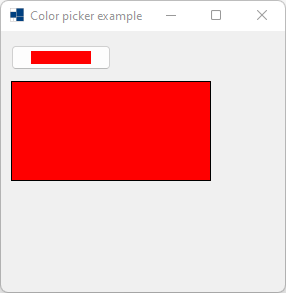
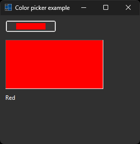
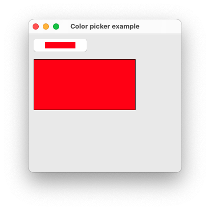
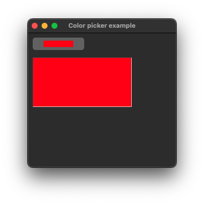
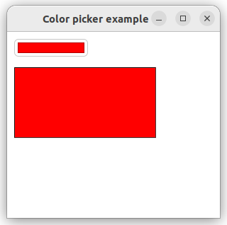
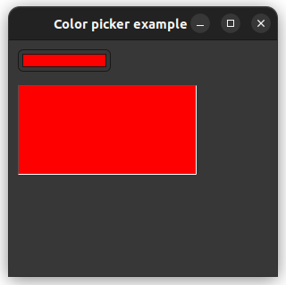

|
xtd
0.2.0
|
Loading...
Searching...
No Matches
color_picker.cpp
demonstrates the use of xtd::forms::color_picker control.
- Windows
- 

- macOS
- 

- Gnome
- 

#include <xtd/drawing/drawing_2d/hatch_brush>
#include <xtd/drawing/color_translator>
#include <xtd/forms/application>
#include <xtd/forms/color_picker>
#include <xtd/forms/control_paint>
#include <xtd/forms/form>
#include <xtd/forms/label>
#include <xtd/forms/panel>
using namespace xtd;
using namespace xtd::drawing;
using namespace xtd::drawing::drawing_2d;
using namespace xtd::forms;
namespace color_picker_example {
public:
form1() {
text("Color picker example");
test_zone.invalidate();
color_label.text(color_translator::to_html(e.color()));
};
test_zone.parent(*this);
test_zone.location({10, 50});
test_zone.border_style(border_style::fixed_3d);
test_zone.double_buffered(true);
e.graphics().fill_rectangle(hatch_brush {hatch_style::wide_checker_board, color::from_argb(0x54, 0x54, 0x54), color::from_argb(0xA8, 0xA8, 0xA8)}, e.clip_rectangle());
control_paint::draw_border(test_zone, e.graphics(), test_zone.border_style(), test_zone.border_sides(), application::style_sheet().system_colors().control_text(), e.clip_rectangle());
};
color_label.parent(*this);
color_label.auto_size(true);
color_label.location({10, 160});
}
private:
panel test_zone;
label color_label;
};
}
auto main()->int {
application::run(color_picker_example::form1 {});
}
Defines a rectangular xtd::drawing::brush with a hatch style, a foreground color, and a background co...
Definition hatch_brush.h:32
Defines a xtd::drawing::brush of a single color. Brushes are used to fill graphics shapes,...
Definition solid_brush.h:30
Provides data for the xtd::forms::color_picker::color_picker_changed event.
Definition color_picker_event_args.h:25
Represents a picker control that displays available colors along with controls that enable the user t...
Definition color_picker.h:30
event< color_picker, color_picker_event_handler > color_picker_changed
Occurs when the value of the color property changes.
Definition color_picker.h:160
virtual bool alpha_color() const noexcept
Gets a value indicating whether the dialog box shows alpha values and an opacity selector (slider).
virtual const drawing::color & color() const noexcept
Gets the color selected by the user.
virtual drawing::point location() const noexcept
Gets the coordinates of the upper-left corner of the control relative to the upper-left corner of its...
virtual std::optional< control_ref > parent() const noexcept
Gets the parent container of the control.
Represents a window or dialog box that makes up an application's user interface.
Definition form.h:52
Provides data for the xtd::forms::control::paint event.
Definition paint_event_args.h:28
The xtd::drawing::drawing_2d namespace provides advanced two-dimensional and vector graphics function...
Definition compositing_mode.h:12
The xtd::drawing namespace provides access to GDI+ basic graphics functionality. More advanced functi...
Definition actions_system_images.h:11
The xtd::forms namespace contains classes for creating Windows-based applications that take full adva...
Definition xtd_about_box.h:12
The xtd namespace contains all fundamental classes to access Hardware, Os, System,...
Definition xtd_about_box.h:10
Generated on Sat Feb 24 2024 22:04:05 for xtd by Gammasoft. All rights reserved.